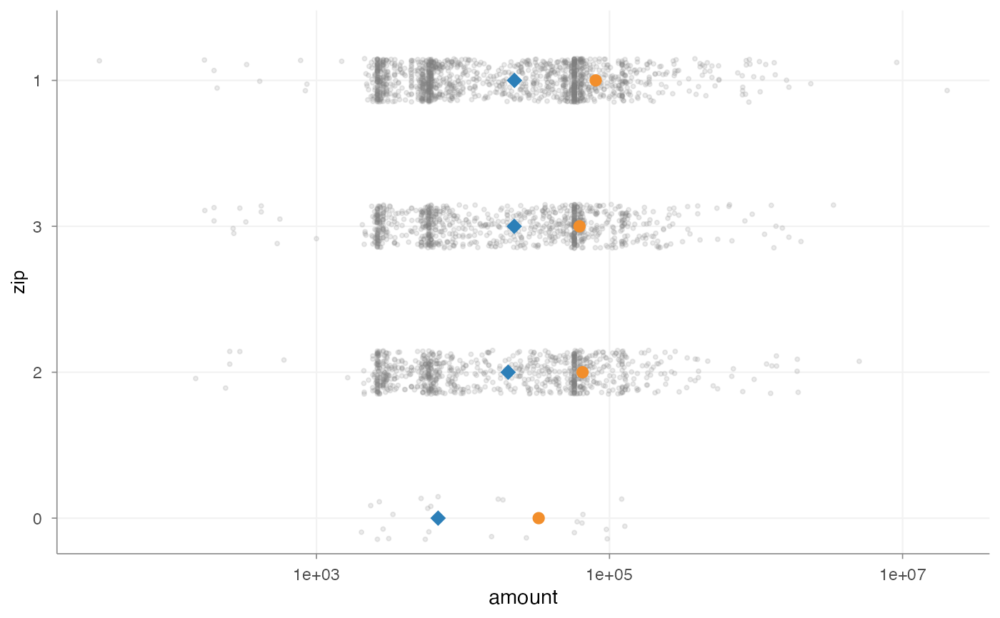

Exploratory severity diagnostics by category
Source:R/severity_distribution.R
plot_severity_distribution.RdVisualise individual claim amounts overall or per risk factor.
Average claim amounts can be misleading because a small number of large
losses may dominate the mean. plot_severity_distribution() shows the full
claim amount distribution, usually on a log scale, together with mean and
median claim amount markers. If risk_factor is supplied, the distribution
is shown per level of that risk factor. If risk_factor = NULL, the function
shows the overall claim amount distribution. This makes heavy tails, clusters
of small claims, spread differences, extreme losses and distributional shape
visible in a way that average severity alone cannot.
The function is intended for exploratory severity diagnostics in pricing
analysis, portfolio diagnostics, tariff notes, exploratory segmentation
analysis and severity model validation. It uses standard evaluation: pass
column names as character strings through claim_amount and risk_factor.
If threshold is supplied, claims above the threshold are highlighted in
"firebrick" and a dotted threshold line is added. Claims at or below the
threshold remain light grey. Direct labels for the mean, median and optional
threshold are added with ggrepel when show_labels = TRUE; ggrepel is a
suggested package and is not imported as a hard dependency.
Usage
plot_severity_distribution(
data,
claim_amount,
risk_factor = NULL,
top_n = 10,
min_claims = 20,
sort = c("median", "mean", "n_claims"),
threshold = NULL,
mean = TRUE,
median = TRUE,
distribution = c("none", "half_violin", "violin"),
point_method = c("quasirandom", "jitter", "none"),
orientation = c("horizontal", "vertical"),
log_scale = TRUE,
boxplot = FALSE,
boxplot_width = 0.06,
show_labels = TRUE,
all_claims_label = "All claims",
mean_label = "Mean",
median_label = "Median",
threshold_label = "Threshold",
x_label = NULL,
y_label = NULL,
point_alpha = 0.16,
point_size = 0.75,
point_width = 0.15
)Arguments
- data
A
data.framewith claim-level observations.- claim_amount
Character string. Name of the claim amount column.
- risk_factor
Optional character string. Name of the risk factor used to split the severity distribution. If
NULL, the overall claim amount distribution is shown.- top_n
Positive whole number. Number of categories to keep after filtering and sorting.
- min_claims
Positive whole number. Categories with fewer than this number of claim observations are removed.
- sort
Character. Metric used to sort and select categories. One of
"median","mean"or"n_claims".- threshold
Optional numeric scalar. If supplied, claims above this threshold are highlighted and a dotted threshold line is shown.
- mean
Logical. If
TRUE, add a marker for the average claim amount.- median
Logical. If
TRUE, add a marker for the median claim amount.- distribution
Character. Distribution layer. One of
"none","half_violin"or"violin". Default is"none".- point_method
Character. Point placement method. One of
"quasirandom","jitter"or"none".- orientation
Character.
"horizontal"places claim amount on the x-axis and categories on the y-axis."vertical"reverses this.- log_scale
Logical. If
TRUE, use a log10 scale for claim amounts.- boxplot
Logical. If
TRUE, add a small centred boxplot. Default isFALSE.- boxplot_width
Numeric scalar. Width of the optional boxplot. Smaller values keep the boxplot as a subtle summary layer behind the individual claim points.
- show_labels
Logical. If
TRUE, add direct labels for the mean, median and, when supplied, threshold. Requires the suggested packageggrepel.- all_claims_label
Character string used as the category label when
risk_factor = NULL.- mean_label
Character string used for the direct mean marker label. Default is
"Mean".- median_label
Character string used for the direct median marker label. Default is
"Median".- threshold_label
Character string used for the optional threshold label.
- x_label
Optional character string. X-axis label. If
NULL, a default is chosen fromclaim_amount,risk_factorandorientation.- y_label
Optional character string. Y-axis label. If
NULL, a default is chosen fromclaim_amount,risk_factorandorientation.- point_alpha
Numeric alpha for raw claim points.
- point_size
Numeric point size for raw claim points.
- point_width
Numeric spread for raw claim points.
Value
A ggplot object. The plot can be extended with regular ggplot2
syntax, for example + ggplot2::labs(caption = "...") or
+ ggplot2::theme(...).
Examples
x <- plot_severity_distribution(
MTPL,
claim_amount = "amount",
risk_factor = "zip",
top_n = 4,
min_claims = 20,
point_method = "jitter",
show_labels = FALSE
)
#> Warning: Removed 26674 claim observation(s) with missing, non-finite or non-positive values.
print(x)

x_threshold <- plot_severity_distribution(
MTPL,
claim_amount = "amount",
risk_factor = NULL,
threshold = 10000,
min_claims = 20,
point_method = "jitter",
show_labels = FALSE
)
#> Warning: Removed 26674 claim observation(s) with missing, non-finite or non-positive values.